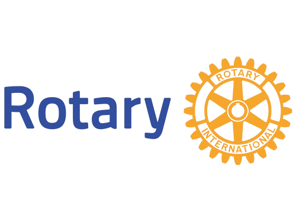

ROTARACT CLUB OF CHENNAI RADIANCE RAISERS
FAMILY OF ROTRARY CLUB OF CHENNAI RADIANCE
ROTARY INTERNATIONAL DISTRICT 3233
PROUDLY PRESENTS

ABOUT

ROTARY
Rotary International, with its global presence and vision, embodies the "Magic of Rotary" in its mission of humanitarian service. Over the past century, Rotary has brought together diverse leaders to tackle the world's challenges, with 14 million members in over 200 countries. Its impact spans areas like polio eradication, clean water, education, and peace. This year, Rotary celebrates the transformative power of unity and compassion, showcasing the magic of collective effort in creating lasting positive change and progress worldwide.

ROTARACT
Rotaract, founded in 1968, is a global organization for young adults aged 18–30, supported by Rotary International. It focuses on leadership, professional development, and community service. Rotaract clubs, which are self-governing and either community-based or university-affiliated, offer members opportunities to work on local and international service projects. The organization fosters cultural exchange, leadership training, and personal growth, empowering young people to create positive change while building lasting friendships and networks.

CHENNAI RADIANCE RAISERS
Chennai Radiance Raisers, part of District 3233, is a dynamic group with over 45 members, including students from 15+ colleges and professionals from various fields. This diverse mix promotes collaboration and growth. The club has organized impactful events focused on community service and personal development. Their efforts have earned several awards, such as the Best Community-Based Projects Award, DRR Recognition Award, and Best Presentation Award at the district event GRM.
STRANGERS
Strangers is a dynamic National level cultural festival that brings together the passion, creativity, and talent of
individuals from diverse backgrounds. Spanning four months, this dynamic celebration offers participants the
opportunity to explore their potential through an exciting lineup of 45 unique events, fostering creativity,
friendship, and cultural exchange.
The event is categorized into five primary segments: On-stage events, Off-stage events, Film, Art and
Photography, and Literature
8 On-stage events feature captivating performances such as Dance, Drama, Music, RJ (Radio Jockey), Fashion
walk, and other interactive displays of creativity, energy, and personality in front of a live audience.
8 Off-stage events include skill-based competitions like, pitch deck, poo Kolam, cooking without fire and other
artistic and culinary challenges, giving participants the chance to showcase their talents in a more relaxed,
hands-on setting.
7 Film Events, 7 Literature Events, and 10 Photography and Art Events extend the festival's reach beyond
geographical boundaries.
These include Sessions, Panel Discussion featuring experts in the fields of Literature, Film Industry and
Photography enabling participants from across the nation to engage in creative expression.
PREVIOUS PROJECTS


THEERA AASAI
Theera Aasai is a heartfelt initiative that turns cinema into a bridge of joy and inclusivity. In Phase 1, children with autism experienced a magical movie outing with Director Halitha Shameem and Actor Gaurav Kaalai. In Phase 2, underprivileged individuals watched Kotukkali at Udhayam Cinemas and found meaning beyond entertainment. More than an event, Theera Aasai is a movement that proves joy knows no boundaries and true inclusion begins with kindness


ISAI KARAM
ISAI KARAM was a fundraising musical event organized in collaboration with actor STR's fan club, held at Anna Nagar Tower Park. The event aimed to raise funds to support children's education and was made possible with the support of STR himself. This initiative showcased the power of music in driving meaningful change.


SCOURING THE CITY
Scouring the City is an international service event aimed at promoting community involvement and environmental responsibility. After Diwali, streets are often left littered with paper and other pollutants. Taking the initiative, we collaborated with corporation workers to clean the streets, contributing to a cleaner and healthier environment following the celebrations. 3 Rotaract Clubs from RID 3233,3012,3203 came together with us to clean their localities.


THAI MIGAZHI
Thai Migazhi is a compassionate endeavor aimed at uplifting underprivileged children. With the support of a private school, we received new dresses to contribute to the cause. As part of this effort, 800 sets of dresses worth approximately 6 lakhs were provided to those in need. The dresses were shipped to Bangalore on December 30, 2024 and reached Sampiege Foundation on December 31, 2024. With their support, the distribution was carried out in three phases.